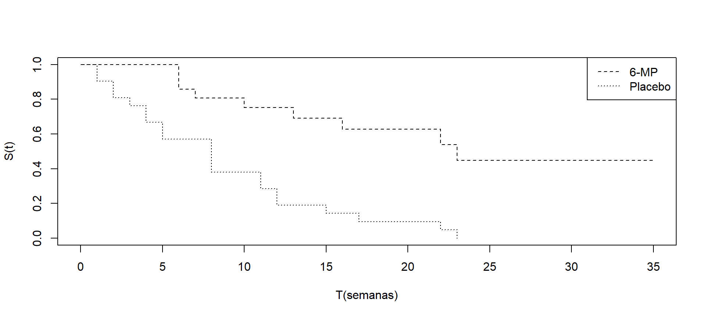

Análise de Sobrevivência
Modelos não Paramétricos
Análise de Sobrevivência
Nesta apresentação vamos ver passo a passo como obter comparar as curvas de sobrevivência utilizando o teste de log-rank. Vamos utilizar o pacote survival que é a principal referência em modelos de análise de sobrevivência.
Vamos usar neste exemplo dados de pacientes com leucemia. O objetivo é verificar se o tratamento proposto, 6MP, tem efeito sobre a doença. Existem dois grupos de pacientes. 21 receberam 6MP que é um medicamento para tratar leucemia e os outros 21 receberam placebo.
O evento falha aqui é ocorrer uma recaída na doença.
Método Kaplan-Meier
```{r}
#| output-location: column
library(survival)
tempo<- c(6,6,6,6,7,9,10,10,11,13,16,17,19,20,22,23,25,32,32,34,35)
status<- c(1,1,1,0,1,0,1,0,0,1,1,0,0,0,1,1,0,0,0,0,0)
tempo2<- c(1,1,2,2,3,4,4,5,5,8,8,8,8,11,11,12,12,15,17,22,23)
status2<- c(1,1,1,1,1,1,1,1,1,1,1,1,1,1,1,1,1,1,1,1,1)
tempo2g <- c(tempo,tempo2)
status2g <- c(status,status2)
grupos <- c(rep(1,21),rep(2,21))
dados <- data.frame(tempos=tempo2g, status=status2g, grupos=grupos)
ajusteKM <- survfit(Surv(tempos, status) ~ grupos, data=dados)
plot(ajusteKM, xlab="T(semanas)",ylab="S(t)", lty=2:3)
legend("topright",c("6-MP","Placebo"), lty = 2:3)
```
Grafico
Método Kaplan-Meier
Call: survfit(formula = Surv(tempos, status) ~ grupos, data = dados)
grupos=1
time n.risk n.event survival std.err lower 95% CI upper 95% CI
6 21 3 0.857 0.0764 0.720 1.000
7 17 1 0.807 0.0869 0.653 0.996
10 15 1 0.753 0.0963 0.586 0.968
13 12 1 0.690 0.1068 0.510 0.935
16 11 1 0.627 0.1141 0.439 0.896
22 7 1 0.538 0.1282 0.337 0.858
23 6 1 0.448 0.1346 0.249 0.807
grupos=2
time n.risk n.event survival std.err lower 95% CI upper 95% CI
1 21 2 0.9048 0.0641 0.78754 1.000
2 19 2 0.8095 0.0857 0.65785 0.996
3 17 1 0.7619 0.0929 0.59988 0.968
4 16 2 0.6667 0.1029 0.49268 0.902
5 14 2 0.5714 0.1080 0.39455 0.828
8 12 4 0.3810 0.1060 0.22085 0.657
11 8 2 0.2857 0.0986 0.14529 0.562
12 6 2 0.1905 0.0857 0.07887 0.460
15 4 1 0.1429 0.0764 0.05011 0.407
17 3 1 0.0952 0.0641 0.02549 0.356
22 2 1 0.0476 0.0465 0.00703 0.322
23 1 1 0.0000 NaN NA NATeste do log-rank
Teste do log-rank usando pesos
Quando usamo rho=0, o teste é identico ao log-rank padrão
Call:
survdiff(formula = Surv(tempos, status) ~ grupos, data = dados,
rho = 0)
N Observed Expected (O-E)^2/E (O-E)^2/V
grupos=1 21 9 19.3 5.46 16.8
grupos=2 21 21 10.7 9.77 16.8
Chisq= 16.8 on 1 degrees of freedom, p= 4e-05 Teste do log-rank usando pesos de Harrington-Fleming
Quando usamo rho=1, ele se torna do teste de log-rank usando os pesos de Harrington-Fleming
```{r}
# rho=1 é o teste de Harrigton-Fleming
survdiff(Surv(tempos, status) ~ grupos, rho=1, data=dados)
```Call:
survdiff(formula = Surv(tempos, status) ~ grupos, data = dados,
rho = 1)
N Observed Expected (O-E)^2/E (O-E)^2/V
grupos=1 21 5.12 12.00 3.94 14.5
grupos=2 21 14.55 7.68 6.16 14.5
Chisq= 14.5 on 1 degrees of freedom, p= 1e-04 Teste do Log-rank para mais de 2 grupos
Vamos usar neste exemplo os dados de um estudo experimental com camundongos conduzido no Centro de Pesquisas René Rachou, FioCruz, MG.
44 camundongos foram infectados pela malaria (Plasmodium berguei) e aleatoriamente alocados em três grupos:
Grupo 1: Imunizados 30 dias antes da infecção pela malária. Foram infetados também por esquistossomose.
Grupo 2: Controle (Somente infectado pela malária)
Grupo 3: Infectado pela malária e ela esquistossomose.
Teste do Log-rank para mais de 2 grupos
A resposta foi o tempo decorrido desde a infecção pela malária até a morte do camundongo. O tempo foi medido em dias e o estudo foi acompanhado por 30 dias.
Vamos adotar um nível de significância de 0,05 para avaliar a diferença entre as curvas, ou seja, se a estatística de log-rank tiver um valor menor que 0,05, vamos rejeitar a hipótese nula.
Método Kaplan-Meier
```{r}
tempos <- c(7,8,8,8,8,12,12,17,18,22,30,30,30,30,30,30,8,8,9,
10,10,14,15,15,18,19,21,22,22,23,25,8,8,8,8,8,8,
9,10,10,10,11,17,19)
status <- c(rep(1,10), rep(0,6), rep(1,15), rep(1,13))
grupos <- c(rep(1,16), rep(2,15), rep(3,13))
dados2 <- data.frame(tempos, status, grupos)
ajusteKM2<- survfit(Surv(tempos, status) ~ grupos, data = dados2)
plot(ajusteKM2, xlab="T(dias)",ylab="S(t)", lty=1:3)
legend("topright",c("G 1","G 2", "G 3"), lty = 1:3)
```Grafico

Teste do log-rank
Call:
survdiff(formula = Surv(tempos, status) ~ grupos, data = dados2,
rho = 0)
N Observed Expected (O-E)^2/E (O-E)^2/V
grupos=1 16 10 17.00 2.8816 6.4111
grupos=2 15 15 14.51 0.0167 0.0317
grupos=3 13 13 6.49 6.5190 10.4447
Chisq= 12.6 on 2 degrees of freedom, p= 0.002 Obtendo os resultados de outra forma
Avaliação
Como a hipótese nula foi rejeitada precisamos avaliar se todas as curvas de sobrevivência são diferentes. Para isto vamos fazer comparações, duas a duas, utilizando o método de Bonferroni.
Como existem três grupos, são três as comparações duas a duas.
O nível de significância a ser adotado nestas comparações é de \(\alpha\) = 0,05/3 = 0,017. Isto vai garantir uma conclusão geral ao nível máximo de 0,05.
Grupos 1 e 2
Call:
survdiff(formula = Surv(tempos, status) ~ grupos, data = subset(dados2,
grupos != 3), rho = 0)
N Observed Expected (O-E)^2/E (O-E)^2/V
grupos=1 16 10 13.7 1.01 2.53
grupos=2 15 15 11.3 1.23 2.53
Chisq= 2.5 on 1 degrees of freedom, p= 0.1 Grupos 1 e 3
Call:
survdiff(formula = Surv(tempos, status) ~ grupos, data = subset(dados2,
grupos != 2), rho = 0)
N Observed Expected (O-E)^2/E (O-E)^2/V
grupos=1 16 10 15.34 1.86 7.86
grupos=3 13 13 7.66 3.72 7.86
Chisq= 7.9 on 1 degrees of freedom, p= 0.005 Grupos 2 e 3
Call:
survdiff(formula = Surv(tempos, status) ~ grupos, data = subset(dados2,
grupos != 1), rho = 0)
N Observed Expected (O-E)^2/E (O-E)^2/V
grupos=2 15 15 20.53 1.49 7.98
grupos=3 13 13 7.47 4.08 7.98
Chisq= 8 on 1 degrees of freedom, p= 0.005 Curva de Sobrevivência estratificada
Neste exemplo temos 2 tratamentos, mas queremos controlar os resultados considerando uma variável categórica (sexo).
O evento estudado é o tempo até a recaída de leucemia.
O conjunto de dados tem os seguintes informação:
- tempo (semanas)
- status (0 = censura e 1 = falha)
- sexo (0 = mulher e 1 = homem)
- logwbc = log do número de células brancas
- Rx (0 = Novo tratamento e 1 = Placebo)
Vamos ver como isto pode ser feito na função survfit.
Curva de Sobrevivência estratificada
```{r}
#| fig-width: 10
#| fig-height: 4.5
library(readxl)
dados_a <- read_xlsx("anderson.xlsx", col_names=T)
ajusteKM_S <- survfit(Surv(tempo, status) ~ Rx + strata(sexo), data = dados_a)
plot(ajusteKM_S, xlab="T(semanas)",ylab="S(t)", lty=1:4)
legend("topright",c("Rx=0 e Sexo=M","Rx=0 e Sexo=H", "Rx=1 e Sexo=M",
"Rx=1 e Sexo=H"), lty = 1:4)
```Função taxa de falhas e quantis
Vamos obter uma aproximação da funçaõ taxa de falhas usando a função density
Posteriormente vamos obter o quantil usando uma função do pacote survey
Função taxa de falhas não paramétrica
tempo<- c(6,6,6,6,7,9,10,10,11,13,16,17,19,20,22,23,25,32,32,34,35)
status<- c(1,1,1,0,1,0,1,0,0,1,1,0,0,0,1,1,0,0,0,0,0)
dados <- data.frame(tempos=tempo, status=status)
ajusteKM <- survfit(Surv(tempos, status) ~ 1, data=dados)
ajusteKM_sum <- summary(ajusteKM)
pesos <- ajusteKM_sum$n.event/ajusteKM_sum$n.risk
h <- density(ajusteKM_sum$time, weights = pesos,
kernel = "gaussian", n = 100, from = 0, to = 35)
plot(h$x, h$y, type = "l", xlab = "Tempo [semanas]", ylab = "Taxa de Falhas")Função taxa de falhas não paramétrica
tempo2<- c(1,1,2,2,3,4,4,5,5,8,8,8,8,11,11,12,12,15,17,22,23)
status2<- c(1,1,1,1,1,1,1,1,1,1,1,1,1,1,1,1,1,1,1,1,1)
dados <- data.frame(tempos=tempo2, status=status2)
ajusteKM <- survfit(Surv(tempos, status) ~ 1, data=dados)
ajusteKM_sum <- summary(ajusteKM)
pesos <- ajusteKM_sum$n.event/ajusteKM_sum$n.risk
h <- density(ajusteKM_sum$time, weights = pesos,
kernel = "gaussian", n = 100, from = 0, to = 25)
plot(h$x, h$y, type = "l", xlab = "Tempo [semanas]", ylab = "Taxa de Falhas")Quantis não paramétricos
library(survey)
dados_p <- svydesign(ids = ~1, data=dados)
dados_svykm <- svykm(Surv(tempos, status) ~ 1, dados_p, se=TRUE)
quantile(dados_svykm, 0.5, ci=TRUE)0.5
8
attr(,"ci")
0.025 0.975
0.5 5 12